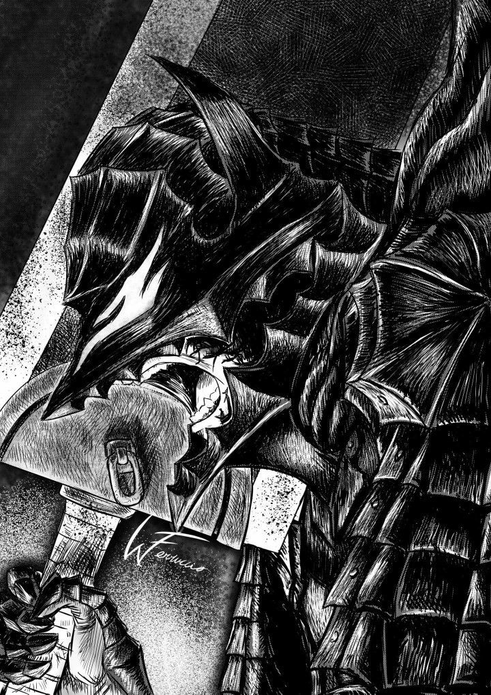

About Guts:
renowned as the "Black Swordsman", is a former mercenary and branded wanderer who travels the world in a constant internal struggle between pursuing his own ends and protecting those dear to him.

"You’re right, we are mortal and fragile.
But even if we are tortured or wounded, we’ll fight to survive.
You should feel the pain we feel and understand.
I am the messenger that will deliver you to that pain and understanding.
-Guts”